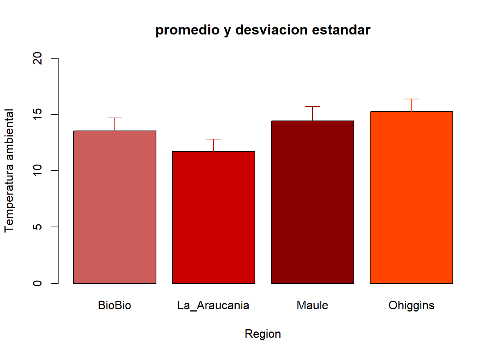

Capitulo 5 Estadística descriptiva: Medidas de tendencia central y dispersión
En el laboratorio anterior aprendimos a graficar la información contenida en nuestra base de datos. El paso siguiente es resumir la información contenida en nuestra base de datos mediante la estimación de medidas de tendencia central y dispersión.
5.1 Medidas de tendencia central
Las medidas de tendencia central son medidas estadísticas que permiten resumir en un solo valor a un conjunto de valores. Representan un centro en torno al cual se encuentra ubicado el conjunto de los datos.
Las medidas de tendencia central más utilizadas son: media, mediana y moda.
Funciones:
sum(x): Suma de los elementos enxmean(x): Promedio de los elementos enxmedian(x): Mediana de los elementos enxlength(x): Número de elementos enx
Calculemos el promedio y la mediana de la temperatura ambiental en todas las muestras incluidas en nuestra base de datos:
## [1] 13.74167## [1] 13.75Estas estimaciones las hemos realizado sobre todas las observaciones contenidas en nuestra variable. Sin embargo, en algunas ocasiones, estaremos interesados en un subconjunto de las observaciones que cumplan con alguna condición de nuestro interés. Por ejemplo, podemos estar interesados en el promedio de la temperatura ambiental en aquellas muestras que provienen solamente de la región del Maule. Para seleccionar aquellas muestras que cumplen con esta restricción podemos generar un subconjunto o subset:
"Nombre del objeto" <- "base de datos"$ "columna de interés" == "restricción"
## [1] FALSE FALSE FALSE FALSE FALSE FALSE FALSE FALSE FALSE FALSE FALSE
## [12] FALSE FALSE FALSE FALSE FALSE FALSE FALSE FALSE FALSE FALSE FALSE
## [23] FALSE FALSE FALSE FALSE FALSE FALSE FALSE FALSE TRUE TRUE TRUE
## [34] TRUE TRUE TRUE TRUE TRUE TRUE TRUE TRUE TRUE TRUE TRUE
## [45] TRUE TRUE TRUE TRUE TRUE TRUE TRUE TRUE TRUE TRUE TRUE
## [56] TRUE TRUE TRUE TRUE TRUE FALSE FALSE FALSE FALSE FALSE FALSE
## [67] FALSE FALSE FALSE FALSE FALSE FALSE FALSE FALSE FALSE FALSE FALSE
## [78] FALSE FALSE FALSE FALSE FALSE FALSE FALSE FALSE FALSE FALSE FALSE
## [89] FALSE FALSE FALSE FALSE FALSE FALSE FALSE FALSE FALSE FALSE FALSE
## [100] FALSE FALSE FALSE FALSE FALSE FALSE FALSE FALSE FALSE FALSE FALSE
## [111] FALSE FALSE FALSE FALSE FALSE FALSE FALSE FALSE FALSE FALSEAl revisar el contenido de nuestro objeto llamado subset_data, R nos dice cuál o cuáles de las observaciones cumplen (TRUE) o no cumplen (FALSE) con nuestro requerimiento. Ahora, podemos calcular el promedio de la temperatura ambiental promedio en aquellas muestras que provienen solamente de la región del Maule:
## [1] 14.426675.1.1 Operadores lógicos
==Igual a…¡=No es igual a…>Mayor que…<Menor que…>=Mayor o igual que…<=Menor o igual que…|“o” (al menos una de las condiciones debe ser cierta)&“y” (ambas condiciones deben ser ciertas)
Para estimar el número de observaciones que cumplen con nuestra condición podemos utilizar la función length():
## [1] 30Regresemos a nuestra base de datos. Pasos atrás calculamos el promedio de la temperatura ambiental en todas las muestras incluidas en nuestra base de datos. Eso es un gran paso para describir la variable temperatura ambiental. Sin embargo, la base de datos contiene mucha información adicional que nos permitirá describir de mejor forma la temperatura ambiental registrada en nuestro estudio. Por ejemplo, podríamos preguntarnos si la temperatura ambiental difiere según la región en la que fue medida. Para ello, debemos conocer el promedio de la variable Temperatura para las cuatro diferentes regiones contenidas en la variable Region. Una opción es generar cuatro diferentes “subset”:
## [1] 15.25667## [1] 14.42667## [1] 13.54667## [1] 11.73667Afortunadamente, R nos ofrece alternativas mucho más eficientes y elegantes para realizar la misma tarea. Por ejemplo, `tapply()``aplica una función (en este caso mean()) a cada grupo de observaciones de una variable definidos por los niveles de una segunda variable:
## BioBio La_Araucania Maule Ohiggins
## 13.54667 11.73667 14.42667 15.25667Incluso, R nos permite guardar nuestros cálculos en forma de objeto:
## BioBio La_Araucania Maule Ohiggins
## 13.54667 11.73667 14.42667 15.256675.2 Medidas de dispersión
A diferencia de las medidas de tendencia central, las medidas de dispersión sirven como indicador de la variabilidad de los datos de la variable. Dicho en otros términos, las medidas de dispersión pretenden evaluar en qué medida los datos difieren entre sí. Las medidas de tendencia central más utilizadas son: desviación estándar, varianza y el coeficiente de variación.
Funciones:
var(x)Varianza de los elementos en xsd(x)Desviación estándar de los elementos en xrange(x)Rango de los elementos en xmin(x)Mínimo valor observado entre los elementos en xmax(x)Máximo valor observado entre los elementos en x
Calculemos la desviación estándar y la varianza de la temperatura ambiental en todas las muestras incluidas en nuestra base de datos:
## [1] 1.736972## [1] 3.017073Intentemos calcular manualmente la desviación estándar a partir de la varianza:
Ahora, evaluemos si la desviación estándar de la temperatura ambiental difiere según la región en la que fue medida:
## BioBio La_Araucania Maule Ohiggins
## 1.136156 1.064630 1.291333 1.109422El Coeficiente de variación (C.V.) es un índice adimensional de variabilidad especialmente útil para comparar variabilidades de características de diferente naturaleza o de la misma naturaleza en diferentes grupos. El C.V. se obtiene al dividir la desviación estándar por la media aritmética, y multiplicado este cuociente por 100. A mayor valor del C.V. mayor heterogeneidad (variabilidad) de los valores de la variable; y a menor C.V. mayor homogeneidad en los valores de la variable.
En caso de que estuviésemos interesados en comparar la variabilidad existente en las variables temperatura ambiental y superficie cultivada (dos variables de naturaleza diferente), el coeficiente de variación es de gran utilidad:
## [1] 12.64019## [1] 46.64448De acuerdo a nuestros resultados, la variable superficie cultivada (Hectareas) presenta mayor variabilidad (casi 3 veces) que la variable temperatura ambiental (Temperatura).
5.3 Tabla Resumen
Las medidas de tendencia central y dispersión las podemos presentar por medio de una tabla resumen. Una tabla representa un medio para organizar datos en filas y columnas. Para crear nuestra tabla resumen, podemos generar un objeto utilizando el comando cbind(), el cual nos permite unir diferentes columnas. Por otro lado el comando rbind() nos permite unir diferentes filas.
Ahora, generaremos una tabla que resuma la información contenida en la variable temperatura ambiental. Esta tabla nos especificará como el promedio, mediana, desviación estándar y coeficiente de variación difiere entre las diferentes regiones. Para ello utilizaremos la función tapply().
Lo primero que haremos será generar 4 objetos que contengan las medidas que nos interesan:
## BioBio La_Araucania Maule Ohiggins
## 13.54667 11.73667 14.42667 15.25667## BioBio La_Araucania Maule Ohiggins
## 13.75 11.60 14.50 15.15## BioBio La_Araucania Maule Ohiggins
## 1.136156 1.064630 1.291333 1.109422## BioBio La_Araucania Maule Ohiggins
## 8.386979 9.070973 8.951012 7.271716Podemos genera la tabla con el comando cbind(). Le especificaremos a R que cada uno de nuestros objetos será una columna en nuestra tabla:
## promedio_temp mediana_temp desvest_temp coefvar_temp
## BioBio 13.54667 13.75 1.136156 8.386979
## La_Araucania 11.73667 11.60 1.064630 9.070973
## Maule 14.42667 14.50 1.291333 8.951012
## Ohiggins 15.25667 15.15 1.109422 7.271716Aunque una tabla resumen encierra toda la información disponible, siempre es recomendable realizar un análisis visual de los datos. Para ello debemos…graficar!
5.4 Gráfico de Barras
Un gráfico de barras (barplot) es uno de los gráficos más comunes. Nos muestra la relación entre una variable numérica (generalmente en el eje y) y una variable categórica (generalmente en el eje x). A continuación, generaremos un gráfico de barras para evaluar si la temperatura ambiental difiere según la región en la que fue medida.
Lo primero que haremos será generar (otra vez!) 2 objetos que contengan el promedio y la desviación estándar de la temperatura ambiental medida en cada una de las regiones.
## BioBio La_Araucania Maule Ohiggins
## 13.54667 11.73667 14.42667 15.25667## BioBio La_Araucania Maule Ohiggins
## 1.136156 1.064630 1.291333 1.109422Ahora, utilizaremos el primero de los objetos creados para graficar el promedio de la temperatura según la región en la que fue medida. Pare ello generaremos un objeto que contenga los comandos necesarios para generar nuestro gráfico de barras:
Solo nos falta agregar las respectivas desviaciones estándar asociadas a cada promedio. Pare ello utilizaremos el comando arrows y así agregar las líneas con las desviaciones estándar al objeto que contiene nuestro gráfico:
GRAFICO<- barplot(promedio_temp, ylim=c(0,20), xlab="Region", ylab="Temperatura ambiental",col=c("indianred","red3","red4","orangered"), main= "promedio y desviacion estandar")
arrows(GRAFICO, promedio_temp + desvest_temp, GRAFICO, promedio_temp - desvest_temp,
angle = 90, code = 1, length = 0.1, col = c("indianred","red3","red4","orangered"))